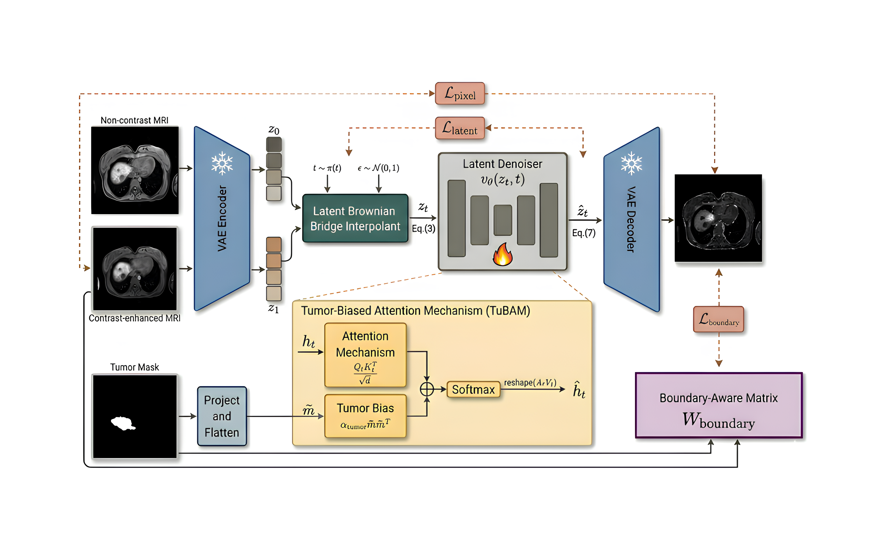
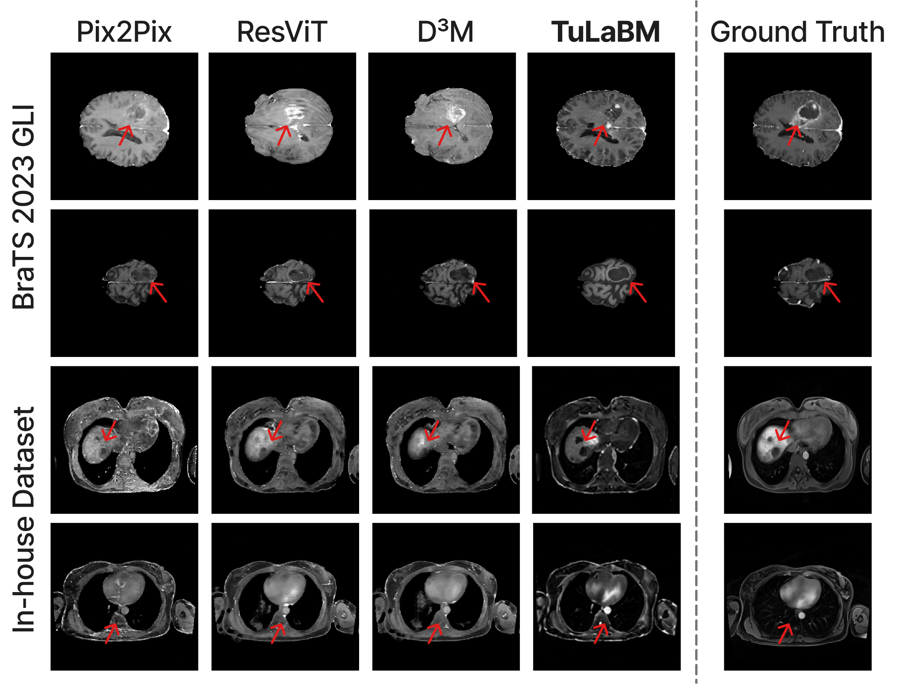

TuLaBM
TuLaBM: Tumor-Biased Latent Bridge Matching for Contrast-Enhanced MRI Synthesis
*Equal contribution
Brownian bridge transport in latent space.
Tumor-biased attention during training.
Contrast-enhanced MRI in 0.097 s per slice.
01 / ABSTRACT
Abstract
Contrast-enhanced MRI (CE-MRI) is central to tumor assessment but requires gadolinium-based contrast agents (GBCAs), which add cost and raise safety and environmental concerns. Synthesizing CE-MRI from non-contrast MRI (NC-MRI) is an attractive alternative, yet adversarial models are unstable and diffusion models are slow and often misrepresent tumor enhancement. We propose Tumor-Biased Latent Bridge Matching (TuLaBM), which casts NC-to-CE translation as Brownian bridge transport between the two image distributions in the latent space of a pretrained autoencoder. A Tumor-Biased Attention Mechanism (TuBAM) adds a tumor-mask bias to the self-attention logits of the drift network during training, and a boundary-aware loss weights reconstruction errors near tumor margins. On BraTS 2023 GLI, TuLaBM achieves the highest whole-image and tumor-region SSIM among the compared methods; it also transfers to in-house liver MRI in zero-shot and fine-tuned settings, and synthesizes a slice in 0.097 s.

02 / METHOD
Method
- Latent bridge matching. An NC slice x_0 and its paired CE slice x_1 are encoded by the frozen SDXL VAE into z_0 = \mathcal{E}(x_0) and z_1 = \mathcal{E}(x_1). The drift network v_\theta (the SDXL U-Net) is trained on the Brownian bridge interpolant z_t = (1-t)\,z_0 + t\,z_1 + \sigma\sqrt{t(1-t)}\,\varepsilon, \varepsilon \sim \mathcal{N}(0, I).
- Tumor-Biased Attention (TuBAM). Adds \alpha\, m m^\top to the self-attention logits, where m is the tumor mask resampled to each attention resolution. For a tumor query this multiplies the weights of tumor keys by e^\alpha (about 1.65 for \alpha = 0.5) before renormalization. No parameters are added, and it is disabled in eval mode.
- Boundary-aware loss. Weights the L1 error by w = \exp(-D/\tau)\cdot m, where D is the distance to the tumor boundary, clipped at 30 px and normalized to [0, 1]. Weights peak at the margin, decay toward the core and are zero outside the tumor; normalizing by \sum w makes the loss independent of tumor size.
- Inference. The NC latent initializes the bridge at t = 0, and the SDE is integrated with the learned drift in K Euler–Maruyama steps (K = 4 in the paper), then decoded. Attention is standard and no tumor mask is used.
The training objective is
\mathcal{L}_{\mathrm{lat}} = \left\| \frac{z_1 - z_t}{1-t} - v_\theta(z_t, t) \right\|^2, \qquad \hat z_1 = z_t + (1-t)\,v_\theta(z_t, t), \qquad \hat x_1 = \mathcal{D}(\hat z_1)
\mathcal{L} = \mathcal{L}_{\mathrm{lat}} + \lambda_{\mathrm{pix}}\,\big|\hat x_1 - x_1\big|_1 + \lambda_{\mathrm{boundary}}\,\mathcal{L}_{\mathrm{boundary}}
Because TuBAM and the boundary-aware loss act only during training, the deployed model has the same architecture, cost and inputs as a plain latent bridge model.
03 / RESULTS
Results
Whole-image and tumor-region PSNR (dB) and SSIM (%) on BraTS 2023 GLI (T1n → T1c), mean ± standard deviation over test slices, with inference time per slice, as reported in the paper:
| Method | PSNR ↑ | SSIM ↑ | Tumor PSNR ↑ | Tumor SSIM ↑ | Time (s) ↓ |
|---|---|---|---|---|---|
| Pix2Pix | 23.53 ± 2.89 | 87.70 ± 4.25 | 15.31 ± 4.40 | 65.37 ± 18.38 | 0.024 |
| ResViT | 23.54 ± 2.81 | 87.43 ± 4.19 | 15.21 ± 4.41 | 65.19 ± 17.87 | 0.028 |
| Palette | 18.95 ± 5.02 | 39.97 ± 29.09 | 14.00 ± 4.75 | 67.86 ± 17.10 | 1.22 |
| I²SB | 25.01 ± 2.94 | 89.11 ± 3.99 | 17.05 ± 4.81 | 71.59 ± 16.66 | 11.8 |
| D³M | 25.11 ± 3.33 | 90.95 ± 3.86 | 17.33 ± 4.56 | 73.21 ± 16.22 | 4.58 |
| TuLaBM | 25.16 ± 2.58 | 92.40 ± 1.51 | 18.34 ± 3.01 | 88.66 ± 5.78 | 0.097 |
- The largest gain is in the tumor region: SSIM rises from 73.21% to 88.66%, with a standard deviation about three times smaller than that of every baseline.
- Whole-image PSNR is on par with D³M (+0.05 dB).
- TuLaBM is 47–122× faster than the pixel-space models D³M and I²SB, and about 4× slower than the single-pass GANs.
In-house liver MRI (zero-shot and fine-tuned)
| Method | Zero-shot PSNR ↑ | Zero-shot SSIM ↑ | Fine-tuned PSNR ↑ | Fine-tuned SSIM ↑ |
|---|---|---|---|---|
| Pix2Pix | 16.46 ± 0.93 | 48.84 ± 0.08 | 18.65 ± 0.39 | 50.62 ± 0.06 |
| ResViT | 16.21 ± 1.67 | 53.73 ± 0.10 | 18.28 ± 0.95 | 56.15 ± 0.07 |
| Palette | 15.11 ± 1.90 | 45.03 ± 2.18 | 17.21 ± 0.29 | 52.13 ± 0.06 |
| I²SB | 16.47 ± 1.70 | 50.14 ± 0.40 | 18.70 ± 1.29 | 56.17 ± 0.01 |
| D³M | 16.50 ± 3.45 | 57.13 ± 1.02 | 18.73 ± 1.40 | 58.19 ± 0.03 |
| TuLaBM | 16.57 ± 0.55 | 58.30 ± 9.17 | 19.34 ± 1.53 | 63.60 ± 9.45 |
The BraTS-trained model is applied directly (zero-shot) and after fine-tuning on five liver volumes. The liver data are not released.
Ablation on BraTS 2023 GLI
| Variant | PSNR ↑ | SSIM ↑ | Tumor PSNR ↑ | Tumor SSIM ↑ |
|---|---|---|---|---|
| TuLaBM | 25.16 ± 2.58 | 92.40 ± 1.51 | 18.34 ± 3.01 | 88.66 ± 5.78 |
| w/o boundary loss | 22.53 ± 2.46 | 88.13 ± 1.35 | 16.34 ± 3.22 | 84.17 ± 7.20 |
| w/o boundary loss, TuBAM | 22.19 ± 2.44 | 88.09 | 16.38 ± 3.18 | 84.16 ± 7.13 |
The boundary-aware loss drives most of the gain. TuBAM's contribution is small: it lowers whole-image PSNR from 22.53 to 22.19 dB when removed, while the tumor-region metrics barely change.

04 / CODE
Code and usage
Installation
git clone https://github.com/genmilab/TuLaBM.git
cd TuLaBM
conda create -n tulabm python=3.10 -y
conda activate tulabm
pip install -e .
Requirements: Python ≥ 3.10, PyTorch 2.7, diffusers 0.32, Lightning 2.5, NiBabel, SciPy and scikit-image (full list in requirements.txt). The SDXL VAE and U-Net are downloaded from stabilityai/stable-diffusion-xl-base-1.0 on first use.
Data
Download the BraTS 2023 GLI training and validation releases from Synapse into data/, then build the slice shards:
python scripts/construct_dataset.py
This clips each volume to its 0.1th–99.9th intensity percentiles, rescales to [0, 1], zero-pads axial slices to 256 × 256 and writes, per slice, the T1n source, T1c target, tumor mask (union of all labels) and boundary distance map as WebDataset shards. The training release is split 80/20 at the subject level (seed 42; 1,001 / 250 volumes), and the 219 volumes of the validation release form the test set. Training and validation slices with less than 3% foreground are discarded.
Pretrained Weights
The BraTS 2023 GLI checkpoint (tulabm_brats2023_gli.ckpt, T1n → T1c, latent 4 × 32 × 32, 4 steps) will be released in the repository.
Training
python examples/training/train_tulabm.py examples/training/config/brats.yaml
Set train_shards, validation_shards and save_ckpt_path in the config first. The configuration reported in the paper:
| Key | Value | Meaning |
|---|---|---|
selected_timesteps, prob | [250, 500, 750, 1000], uniform | training timesteps t ∈ {0, ¼, ½, ¾} |
bridge_noise_sigma | 0.008 | bridge noise σ |
attention_bias_weight | 0.5 | TuBAM bias strength α |
boundary_tau | 0.25 | boundary-loss temperature τ |
latent_loss_weight | 1.0 | weight of Llat (L2) |
pixel_loss_weight | 18.0 | λpix (L1) |
boundary_loss_weight | 14.0 | λboundary |
learning_rate, optimizer | 4e-5, AdamW | optimizer |
batch_size, max_steps | 8, 50,000 | about 10 h on one NVIDIA A100 (bf16) |
Inference and Evaluation
python scripts/construct_test_dataset.py # -> data/BraTS2023_GLI_test/{source,target,mask}
python examples/inference/inference_tulabm.py \
--config examples/inference/config/brats.yaml \
--ckpt_path /path/to/BraTS2023_GLI_ckpts/last.ckpt \
--source_dir data/BraTS2023_GLI_test/source \
--target_dir data/BraTS2023_GLI_test/target \
--mask_dir data/BraTS2023_GLI_test/mask \
--final_dir results/brats \
--num_inference_steps 4
python scripts/evaluate.py \
--pred_dir results/brats/output \
--target_dir results/brats/target \
--mask_dir results/brats/mask \
--out_csv results/brats/metrics.csv
Only --source_dir is needed to synthesize; --target_dir and --mask_dir copy the references next to the predictions for evaluation. evaluate.py reports whole-image and tumor-region PSNR and SSIM (Gaussian window, σ = 1.5) as mean ± std over slices. Tumor-region metrics use only slices that contain tumor.
Limitations
- The model is 2D and maps a single NC sequence (T1n) to T1c, without T2-weighted or FLAIR inputs or through-plane context.
- Training requires tumor annotations, and the frozen VAE, pretrained on natural images, bounds the attainable reconstruction quality.
- Zero-shot liver results remain far below in-domain performance; a new anatomy still needs target-domain data.
- PSNR and SSIM do not establish diagnostic equivalence. A reader study and downstream segmentation on synthesized images are still needed.
05 / CITATION
BibTeX
@misc{rege2026tulabm,
title = {TuLaBM: Tumor-Biased Latent Bridge Matching for Contrast-Enhanced MRI Synthesis},
author = {Rege, Atharva Atul and Dukre, Adinath Madhavrao and Balci, Numan and Mahapatra, Dwarikanath and Razzak, Imran},
note = {Submitted to IEEE ISBI 2027},
year = {2026},
url = {https://github.com/genmilab/TuLaBM}
}Acknowledgments
The code builds on LBM: Latent Bridge Matching (Chadebec et al., 2025) and uses the SDXL VAE and U-Net. The baselines are Pix2Pix, ResViT, Palette, I²SB and D³M. We thank the organizers of the BraTS 2023 challenge, and acknowledge the support of Mohamed bin Zayed University of Artificial Intelligence (MBZUAI) and Cleveland Clinic Abu Dhabi.
Contact
For questions or collaboration, please open an issue or reach out to Adinath Madhavrao Dukre.
License
The code is released under the CC BY-NC 4.0 license (LICENSE). The models are trained on BraTS 2023 GLI.
TuLaBM is intended for research only. It is not validated for clinical use and must not inform any diagnostic or treatment decision.